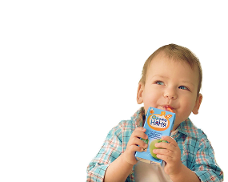

Детское
питание
Натуральное и безопасное питание для вашего малыша
Мы предлагаем натуральное детское питание, разработанное с учетом потребностей детей всех возрастов — от первых месяцев жизни до дошкольников. Наша линейка включает монокомпонентные пюре для начала прикорма и блюда с овощами, фруктами, мясом и рыбой, а также каши, соки и кисломолочные продукты.
Для проверки качества детского питания мы проводим химическую экспертизу. Образцы продукции исследуют на соответствие стандартам Пищевого кодекса — своду международных стандартов, принятых Международной комиссией ВОЗ.
Детская еда для всех возрастов
Начало прикорма
4—5 месяцев

Прикорм дают после консультации с педиатром. Используют овощные и ягодные пюре. Порции начинают с ½ чайной ложки.
Расширяем меню
6—11 месяцев

В рацион вводятся молочные каши и творог. Начиная с ½—1 чайной ложки, и постепенно увеличивая порцию до 30—50 г.
Едим как взрослые
с 12 месяцев
Пища становится более плотной и включает мелкие кусочки пищи, чтобы стимулировать жевание у ребенка.